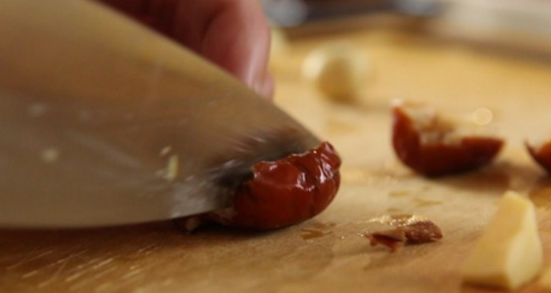

Cách làm gà nhồi thập cẩm món ăn ngon hấp dẫn cho mâm cỗ ngày tết của gia đình bạn nhé. Gà nhồi thập cẩm thơm ngon hấp dẫn thơm thú vị đảm bảo các thành viên trong gia đình bạn sẽ vô cùng thích thú cho mà xem. Sau đây là cách làm gà nhồi thập cẩm thơm ngon hấp dẫn.
Bước 1 : Bạn đem táo khoét bỏ hạt, còn phần hạt sen ban bạn đem bỏ tâm bỏ vỏ, sau đó đem ngâm cung với nếp nhé, trong khoảng nửa tiếng thì bạn đem xả nước đi cho thật sạch nhé. Sau đó bạn đem cho tất cả vào nồi cơm điện rồi đem nấu chín hoặc hấp chín đều được
Bước 2 : Bạn đem thịt nguội cùng với,carot, củ nhân hay còn gọi là củ mã thầy, nấm thái thành viên vuông nhỏ. Sau đó bạn đem bắc chảo nóng lên bếp cho thêm chút dầu ăn rồi đem cho các nguyên liueje này vào xào qua trong khoảng 5 phút nhé. Sau đó đem nêm thêm một chút muối vào sao cho vừa khẩu vị gia đình bạn
.Bước 3 : Sau đó tiếp tục làm theo hướng dẫn cách làm gà nhồi thập cảm ngon hấp dẫn. Bạn đem làm sạch gà moi hết phần ruột ra nhé. Sau đó đem trộn hai phần nhân lại với nhau nhé rồi đem nhồi hết vào bụng gà
Bước 4 : Sau đó bạn đem bắc nồi lên bếp sau đó đem đổ nước cho ngập 1/3 mình gà nhé rồi đem nêm thêm các gia vị đã được liệt kê ở trên phần chuẩn bị nguyên liệu làm vào đem sun sôi lên rồi mới hãy cho gà vào nhé. Sau đó đem vặn lửa nhỏ lại sau đó đun thêm khoảng 15 phút. Sau đó đun cho nồi sôi thêm khoảng 20 phút nữa cho tói khi gà hín hoàn toàn nhé. Nhưng trong khi nấu bạn nhớ múc nước rươi lên trên mình gà nhé như thế để cho gà được thấm đều gia vị nhé.
Chỉ với 4 bước đơn giản bạn đã có được món gà nhồi xôi thập cẩm ngon hấp dẫn cho gia đình bạn rồi đó nhé. Bạn hãy thêm ngay món ăn ngon này vào thực đơn món ăn ngon ngày tết cho gia đình mình nhé.